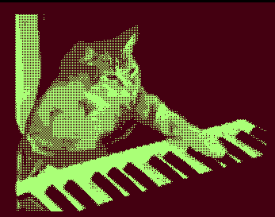

1ba file format
A custom animation file format for uxn-player
uxn-player displays 1 bpp animations on the uxn virtual machine.

A Python script is used to convert GIF files into 1 bpp animations using ordered dithering and stored using a custom made file format.
The source code is available on GitHub